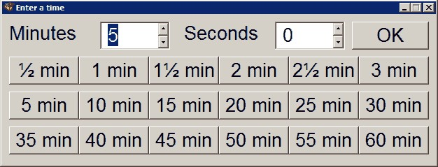
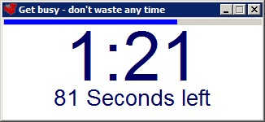
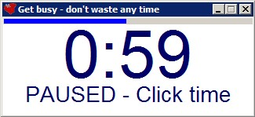
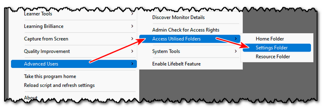
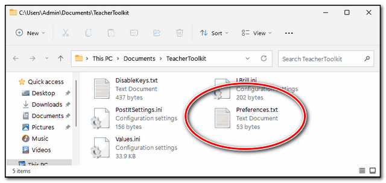
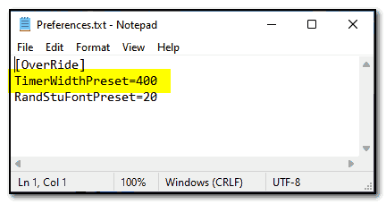

Countdown Timer
(Shortcut WindowsKey and T)
(ALTERNATIVE SHORTCUT = ScrollLock and T)
Also part of the On-Screen Toolbar
A great way to add pace to your lessons, simply select a suitable time for the task:

Then an on-screen timer will tick down, displaying the time in minutes and in seconds:

If you need to pause the timer to relay some additional information, just touch the time and it will pause:

Note:
The timer remembers where you placed it, and reappears in this place.
To reset the position of the timer, either use the shortcut key (WindowsKey and T) or RELOAD the toolkit.
To launch the timer using the shortcut key, without resetting the position, hold down the CTRL key, as you press WindowsKey and T
Other Shortcuts:
WindowsKey and 1 = 1 minute countdown
WindowsKey and 2 = 2 minute countdown
WindowsKey and 3 = 3 minute countdown
WindowsKey and 4 = 4 minute countdown
WindowsKey and 5 = 5 minute countdown
WindowsKey and 6 = 6 minute countdown
WindowsKey and 7 = 7 minute countdown
WindowsKey and 8 = 8 minute countdown
WindowsKey and 9 = 9 minute countdown
WindowsKey and 0 = 30 second countdown
WindowsKey and Ins = 10 minute countdown
Top tip:
You can over-ride the size of the displayed countdown timer by altering the Preferences file in the settings folder:



Alter the value for TimerWidthPreser to preset the size you would prefer.
Setting this to zero will return to the default font size.